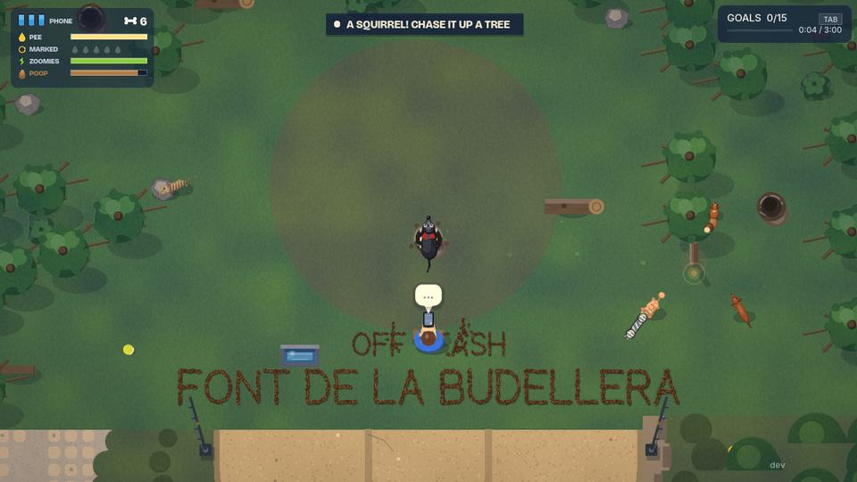

La Carretera de les Aigües
The hillside hike
The long dirt contour track along Collserola's flank high over Barcelona, shared amicably—mostly—between jogging owners, squeaking mountain bikes, stone water fountains and shaded mirador benches on the way to Font de la Budellera.
- Off-leash stop
- FONT DE LA BUDELLERA (Wooded clearing)
- Beat the clock
- Under 3:00
Screenshots



Goals (15)
- Mark 5 spots
- Have 4 good long sniffs
- Get the phone home without a scratch
- Get yourself home without a bump
- Get your business bagged
- Bring the ball back 3 times
- Bring Tofu the cat home
- Have a good long drink
- Let 3 bikes squeak past your human
- Get your human to look up at the view
- Land an x3 trick combo
- Nab the runner's banana off the mirador bench
- Spell LEASH
- Find the hidden pernil
- Beat the clock (under 3:00)